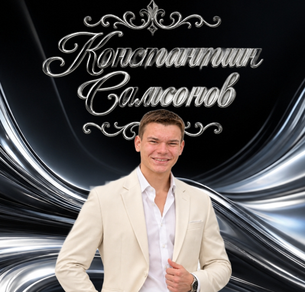
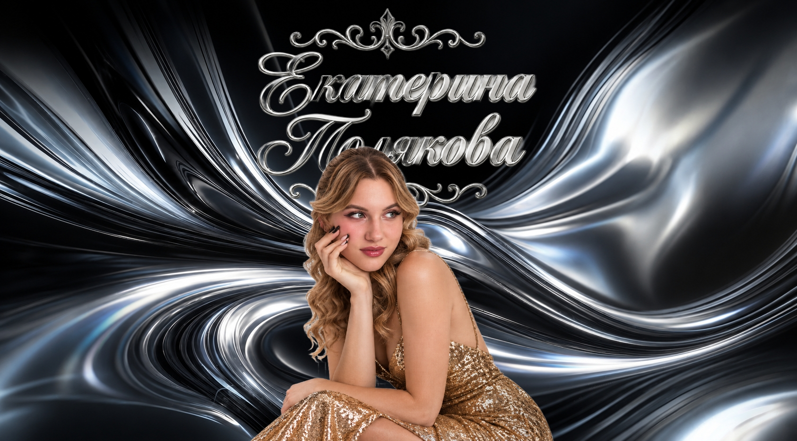
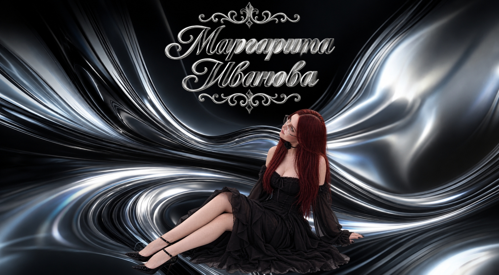
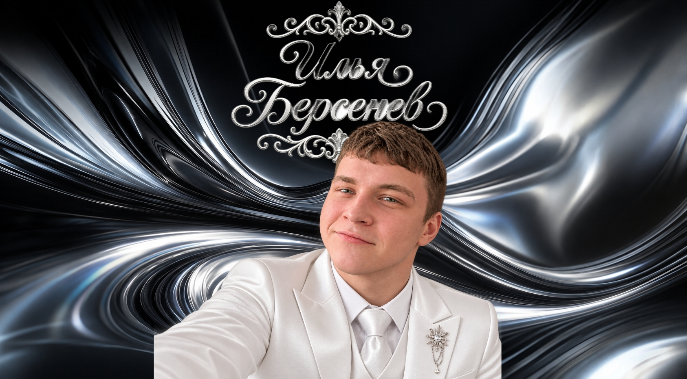
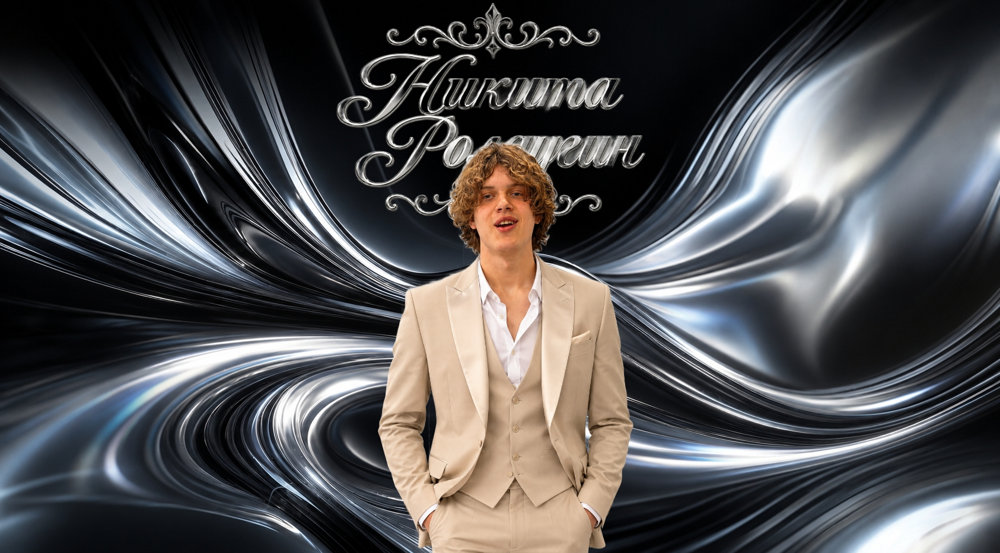
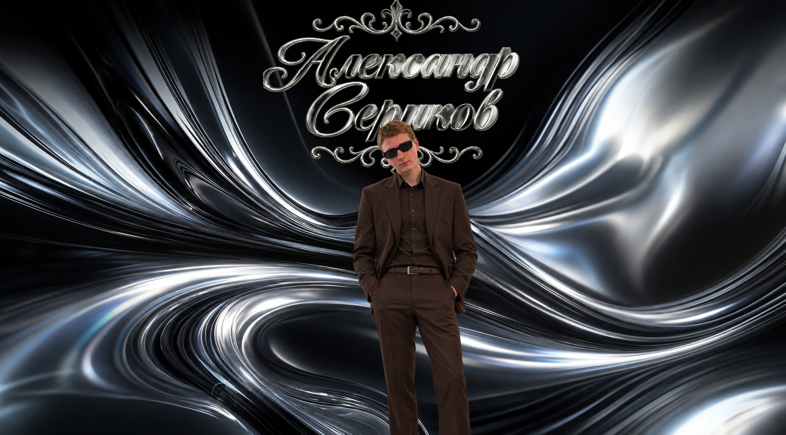

Семь номинаций. В каждой — один твой голос. Решай, кто заберёт свою статуэтку.
01Самый Ходящийотсюда
02Главный прогульщик
03Номинация победителей
04Заводчанин года
05Прилежный студент
06Машина года
07Флешбэк года
Голос решает — один человек, один выбор, без права на «передумал».
Корешок · листай, выбирай, оставь след
Голосдействителен
ПРЕМИЯ • 2027
Твой выбор
01/07
Выбери одного номинанта — и перейдём дальше.
Ужас
Самый Ходящий
Литнарович Кирилл
Кирилл — это человек-стабильность. Пока вокруг кипят страсти, меняются дедлайны, горят проекты и кто-то отчаянно пытается закрыть сессию за три дня, Кирилл просто ходит на пары. Все четыре года он был незыблемым элементом университетской экосистемы. Если в аудитории стоит знакомый силуэт, значит, либо началась пара, либо заканчивается перемена. Он не прогуливал. Точнее, он почти не прогуливал. У него была железная причина отсутствовать: болезнь, форс-мажор или всемирный потоп. Но даже если он болел, он был в чате и спрашивал: «Что задали?» — просто чтобы держать руку на пульсе.
Его утро — это ритуал. Неспешный, но четкий. Кофе, дорога, лекция. Он не бежал сломя голову, потому что не опаздывал. Он не сидел в телефоне на первой паре, потому что слушал. Конспекты Кирилла — это отдельный вид искусства. Они не были красивыми, но там было всё. Он писал как стенографист: быстро, внятно и, главное, по делу.
Одногруппники к третьему курсу смирились: Кирилл — совесть группы. Когда кто-то хотел забить на первую пару, ему говорили: «Ну ты как хочешь, а Кирилл уже в аудитории». Он не читал нотаций, не стыдил. Он просто был там. Его присутствие действовало лучше любого куратора. Глядя на его спокойное лицо, даже самый ленивый студент вздыхал и открывал тетрадь.
За четыре года он стал легендой. Не потому что был гением или душой компании (хотя и тем, и другим отчасти тоже), а потому что выдержал этот марафон. Он прошел через скучные лекции, где преподаватель читал с листа, через семинары, где никто не готов, через утренние пары в минус двадцать и вечерние пары, когда мозг уже кипит.
Когда пришло время получать диплом, кто-то пошутил: «Кирилл, ты можешь не приходить на вручение. Ты и так тут уже четыре года без выходных».
Он улыбнулся. Он пришел. Конечно, пришел. Это же Кирилл.

Самсонов Константин
Константин Самсонов — человек-невидимка, который всегда на месте. Все четыре года он ходил на пары с упорством швейцарских часов. Не прогуливал. Почти.
Пока группа решала, идти или не идти, Самсонов уже сидел в аудитории. Молча. С ровной спиной. Тетрадь открыта, ручка наготове. Он не блистал на семинарах, не спорил с преподавателями, не спал на лекциях. Он просто был.
Его присутствие стало фоном. Как стол преподавателя или доска. Никто не удивлялся, что Костя пришел. Удивлялись, когда он не приходил. А он не приходил только по уважительной причине — и всё равно потом спрашивал: «Что задали?»
Четыре года. Без драм. Без прогулов. Без историй. Просто Самсонов. Просто на паре.
Галкин Виталий
Галкин Виталий — это тот, кто ходил на пары так, будто подписал с расписанием кровный договор. Четыре года. Почти без пропусков.
Он не устраивал драм, не искал отговорок. Пара — значит пара. Утро, зима, дождь, похмелье после чужого дня рождения — неважно. Виталий вставал, шёл и садился на своё место. Обычно сбоку, поближе к окну, чтобы никто не трогал.
На лекциях он не спал. Нет, серьёзно. Даже когда преподаватель читал монотонно и полгруппы уже витала в облаках, Галкин сидел с открытыми глазами. Иногда записывал. Иногда просто смотрел в одну точку. Но был здесь.
Его почти никогда не спрашивали, почему он пришёл. Спрашивали, почему он *не* пришёл — если такое случалось. А случалось редко. И каждый раз это было событием: «Галкина нет? Он заболел? Что-то серьёзное?»
К четвёртому курсу Виталий стал чем-то вроде мебели. Не в плохом смысле. Надёжной, привычной мебели, без которой аудитория выглядела бы пустой. Приходишь — а он уже там. Уходишь — он ещё дописывает. Стабильность в чистом виде.
Диплом он защитил без пафоса. Просто пришёл, ответил, сел. Как и все четыре года.
Караев Эльчин
Караев Эльчин — это человек с загадочной студенческой биографией. Первые два курса он был образцом посещаемости: ходил всегда, почти без пропусков. Сидел, слушал, записывал. Преподаватели его знали, одногруппники привыкли.
А потом наступил третий курс. И Эльчин исчез. Не совсем — он числился, сдавал, появлялся на сессии. Но на парах его не было. Просто пропал с радаров. Никто толком не понял, что случилось. Может, устал. Может, потерял смысл. Может, нашёл что-то важнее. Он не объяснял.
Год его не было. Тишина. Пустое место в аудитории, к которому все привыкли, но так и не смирились.
А на четвёртом курсе Караев вернулся. Так же неожиданно, как и пропал. Сел на своё место и снова начал ходить. Каждую пару. Почти без пропусков. Как будто третьего курса и не было. Как будто он просто взял паузу — и вернулся.
Никто не спрашивал, почему. А если бы спросили, он бы, наверное, пожал плечами. Потому что некоторые вещи не нуждаются в объяснении. Он просто снова был здесь.
Больница
Главный прогульщик

Полякова Екатерина
Четыре года упорного труда — и вот результат: доведенный до автоматизма навык отсутствовать. Награждается за оптимизацию учебного процесса и личный рекорд «Я не приду, но вы держитесь».

Иванова Маргарита
За выдающиеся способности к самоорганизации вне учебного процесса и умение находить вдохновение там, где нет пар. Рита мастерски доказала: главное — не количество посещённых занятий, а уверенность в том, что ты всё успеешь. Её философия проста и гениальна: «Если меня нет на паре — значит, я занята чем-то важным. Или просто сплю». Награждается за стабильность, харизму и умение появляться именно тогда, когда это действительно нужно.

Берсенев Илья
Третий курс стал для Ильи годом великих открытий: оказывается, пары существуют и без него. Преподаватели уже начали сомневаться, существует ли он на самом деле, а одногруппники просто привыкли к загадочному отсутствию. Он не избегает учёбы — он её оптимизирует. Меньше пар — больше жизни. Награждается за виртуозное владение искусством «быть в списке, но не в аудитории».

Ролдугин Никита
За виртуозное владение искусством «дистанционного присутствия» и твёрдую веру в то, что знания можно получить и без личного визита в аудиторию. Никита довёл до совершенства жанр «академического исчезновения»: его нет на паре, но он всегда в курсе событий. Награждается за спокойствие, харизму и умение появляться ровно в тот момент, когда это действительно важно. Его девиз: «Я не прогулял — я взял паузу».
да ты чо
Номинация победителей
Победитель в номинации "Самый Спокойный" 2024, 2025
Ролдугин Никита
Никита Ролдугин — человек, который уже дважды доказал невозможное. В 2024-м и 2025-м он забирал номинацию «Самый спокойный». Не потому, что громко заявлял о себе. Не потому, что устраивал шоу. А потому, что в мире, где все кричат, спорят и нервничают, он просто… оставался собой. Тихий. Собранный. Непробиваемый. Как скала, которую не трогает даже самый сильный шторм. И именно поэтому сейчас, когда речь идёт о главной номинации — «Победитель», — выбор очевиден. Потому что настоящий победитель — это не тот, кто громче всех орёт «я лучший». Это тот, кто побеждает, не повышая голоса от, кто выигрывает, сохраняя лицо, когда вокруг всё горит. от, кто два года подряд доказывал: спокойствие — это не слабость. Это суперсила. Никита Ролдугин уже дважды показал, что умеет быть выше суеты. Теперь пришло время показать, что он умеет быть выше всех. Он не просто заслуживает эту номинацию. Он её уже забрал. Просто ещё не все это поняли.
Кирилл Литнарович — человек, который два года подряд был «тоскиком года», в 2025-м стал ещё и «воздуханом» и «каналом года», и именно поэтому он уже давно забрал главную номинацию «Победитель»: потому что только настоящий король может превратить тоску в стиль, воздух — в атмосферу, а канал — в легенду, не повышая голоса и не теряя лица.
Победитель в номинациях "Оператор года" 2025; "Канал года" 2025
Лукин Александр
Александр Лукин.** В 2025-м он стал «Оператором года» и «Каналом года» одновременно. Не потому что громко заявлял о себе, а потому что молча делал то, что другие только обещают. Он ловил кадры, которые остаются в памяти, строил канал, в который хочется возвращаться, и делал это с такой точностью и вкусом, что спорить о главной номинации уже просто бессмысленно. Настоящий победитель — это не тот, кто собирает лайки, а тот, кто создаёт картинку и пространство, без которых всё остальное теряет смысл. Александр Лукин уже доказал: оператор может быть художником, а канал — целым миром. Он не претендует на победу. Он её уже забрал. **Лукин. Победитель. По праву.
Победитель в номинации "Мем года" 2024, 2025

Сериков Александр
Александр Сериков. Два года подряд — «Мем года». 2024-й. 2025-й. Без перерыва. Без конкуренции. Он не просто делал мемы. Он создавал язык, на котором разговаривал весь чат. Пока другие пытались быть смешными, Сериков делал так, что смеялись все — и потом ещё долго цитировали. Именно поэтому сейчас, когда речь идёт о главной номинации — «Победитель», — выбирать уже не из кого. Потому что настоящий победитель — это не тот, кто один раз попал в точку. Это тот, кто два года подряд диктовал правила игры. Тот, кто превращал обычный момент в легенду. Тот, чьи мемы жили дольше любого хайпа. Александр Сериков уже доказал: мем может быть сильнее любого заявления, а юмор — настоящим оружием. Он не просит победу. Он её уже забрал. Просто все ещё смеются над его мемами и забывают, кто на самом деле главный. Сериков. Победитель. По праву.